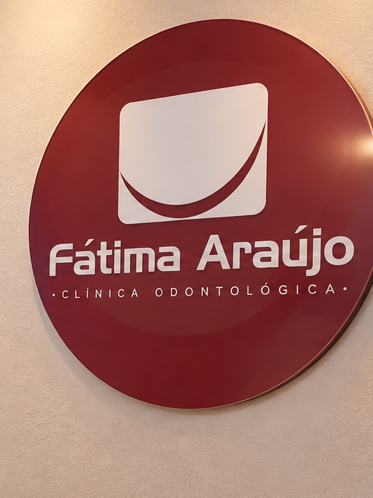
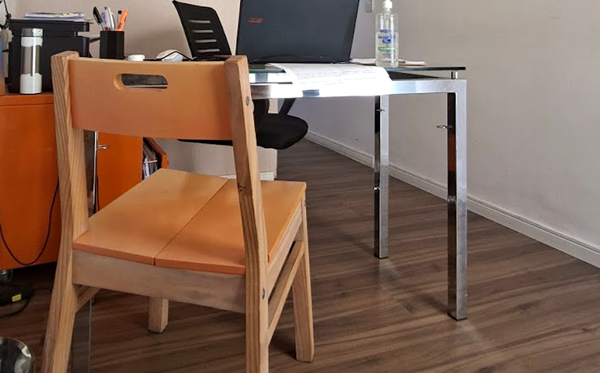
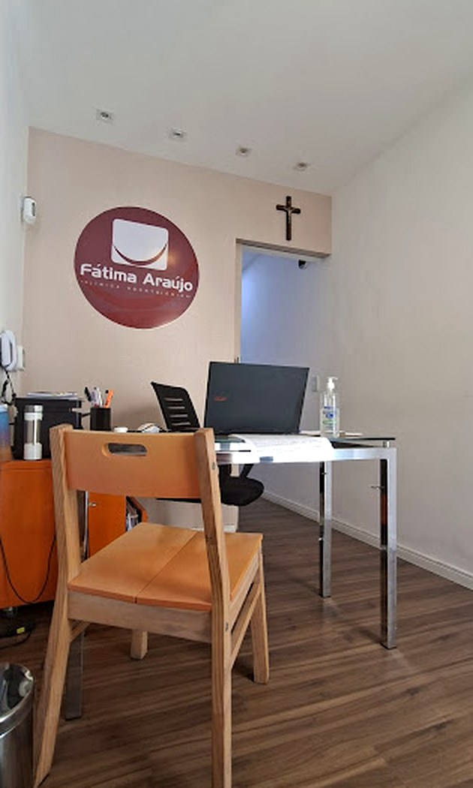
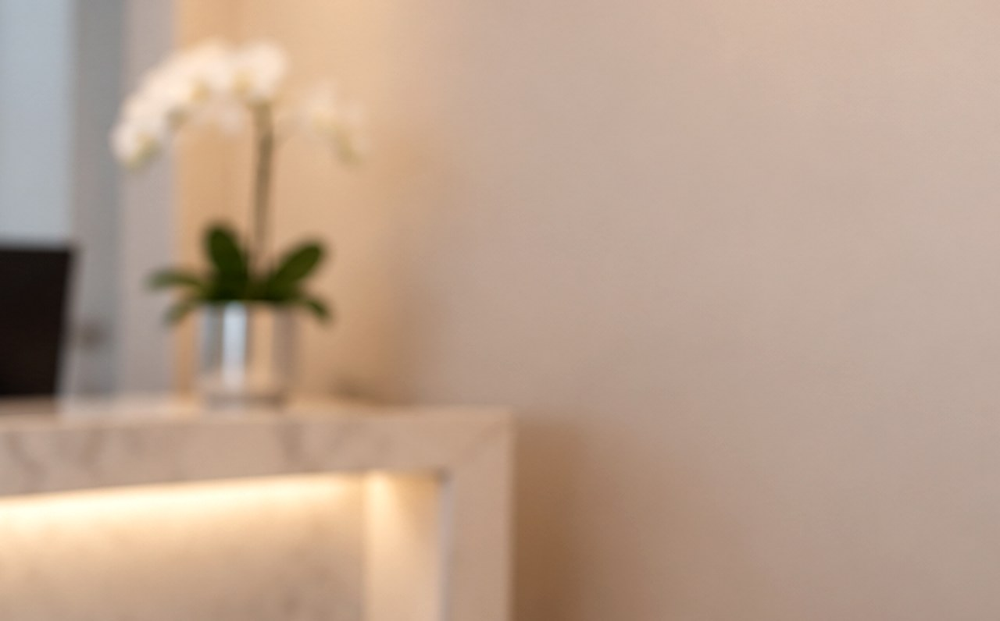

Odontologia geral
A porta de entrada do cuidado: avaliação completa, limpeza, restaurações e o acompanhamento que evita que um problema pequeno vire um tratamento grande.
- Check-up
- Limpeza
- Restauração
- Urgência
Rua Álvares de Azevedo, 252 — Icaraí, Niterói/RJ
Odontologia é saúde antes de ser estética. Aqui a consulta começa ouvindo: entendemos o seu histórico, explicamos cada etapa e combinamos o ritmo do tratamento com você — da limpeza de rotina à reabilitação completa.
Segunda a sexta, das 9h às 18h · (21) 96407-5922
Nota média no Google
Avaliações de pacientes
Atendendo Icaraí desde
Especialidades no mesmo lugar
A clínica
Há mais de duas décadas a Fátima Araújo atende o mesmo bairro — e, com frequência, a mesma família. Avós, filhos e netos passam pela mesma recepção e pela mesma equipe, que aprende o nome de cada paciente.
É isso que sustenta a nossa nota 4,7 no Google: uma consulta que começa ouvindo. Explicamos cada etapa, mostramos o que precisa ser feito e combinamos o ritmo do tratamento com você.
Antes do exame, a conversa. Medo, histórico e expectativa entram no plano.
Etapas, tempo estimado e valores apresentados antes de começar.
Quem te atende hoje é quem te acompanha nos retornos.
Especialidades
Do check-up de rotina à reabilitação completa, sem precisar procurar outro consultório a cada etapa do tratamento.
A porta de entrada do cuidado: avaliação completa, limpeza, restaurações e o acompanhamento que evita que um problema pequeno vire um tratamento grande.
Clareamento com acompanhamento profissional, dosado para respeitar o esmalte e a sensibilidade de cada paciente. Avaliação antes, protocolo definido e manutenção orientada depois.
Aparelhos fixos e alinhadores para corrigir mordida e alinhamento. Planejamento com início, meio e fim claros — e ajustes acompanhados de perto ao longo de todo o percurso.
Saúde da gengiva e do osso que sustentam o dente. Tratamento de sangramento, retração e inflamação, com manutenção periódica para não voltar à estaca zero.
Atendimento pensado para o tempo da criança: primeira visita sem susto, linguagem simples e prevenção desde os primeiros dentes — criando uma relação tranquila com o dentista.
Reabilitação de dentes perdidos ou desgastados, devolvendo mastigação, fala e estética com planejamento individual e etapas apresentadas antes do início.
A disponibilidade de agenda de cada especialidade é confirmada diretamente com a recepção.
Como funciona
Você chama no WhatsApp, conta o que está sentindo e a recepção encaixa o melhor horário.
Consulta de avaliação com exame clínico e as perguntas que ninguém costuma fazer.
Você recebe o plano de tratamento por inteiro: etapas, tempo e valores, sem surpresa.
Tratamento executado no seu ritmo e retornos programados para manter o resultado.
O consultório
Sala de espera tranquila, recepção que atende pelo nome e consultórios preparados para cada especialidade. Todas as fotos abaixo são da clínica, em Icaraí.




Depoimentos
Avaliações públicas de pacientes, com média 4,7 em mais de 170 notas no Google.
Ver todas no GoogleAgendamento
Preencha os campos e o site monta o texto, abrindo o WhatsApp pronto para enviar. Nada é armazenado nem enviado por este site.
Dúvidas
Não achou o que procurava? Chame a recepção no WhatsApp — a resposta costuma vir no mesmo dia.
Rua Álvares de Azevedo, 252 — fundos, sala 201 S, Icaraí, Niterói/RJ, CEP 24220-021. A orientação de chegada é confirmada no momento do agendamento.
Segunda a sexta, das 9h às 18h. Horários especiais podem existir conforme a agenda — confirme com a recepção ao marcar.
Pelo WhatsApp ou pelo telefone (21) 96407-5922. Também respondemos por e-mail em fatimaaraujoodontologia@gmail.com. Se preferir, use o agendamento acima para montar a mensagem.
A rede de convênios atendidos pode mudar ao longo do tempo. Fale com a recepção para confirmar se o seu plano está incluído antes de agendar.
Se você já tem radiografias recentes ou um plano de tratamento feito por outro profissional, leve — ajuda bastante na avaliação. Se não tiver, a avaliação clínica é feita na consulta e indicamos os exames necessários.
Sim. A odontopediatria é uma das especialidades da clínica, com atendimento pensado para o tempo da criança e para uma primeira visita tranquila.
Onde estamos